Vi bygger och utrustar arbetsbilar efter ditt jobb – från första behov till färdig leverans.
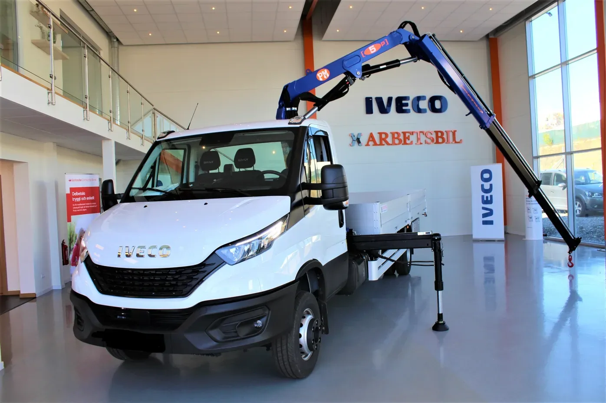
Iveco Daily med kran och flak — byggd i RosersbergFem korta steg i stället för ett telefonsamtal du inte hinner med. Vi läser, räknar och återkommer skriftligt med basbil, påbyggnad, tid och pris. Ingen bindning.
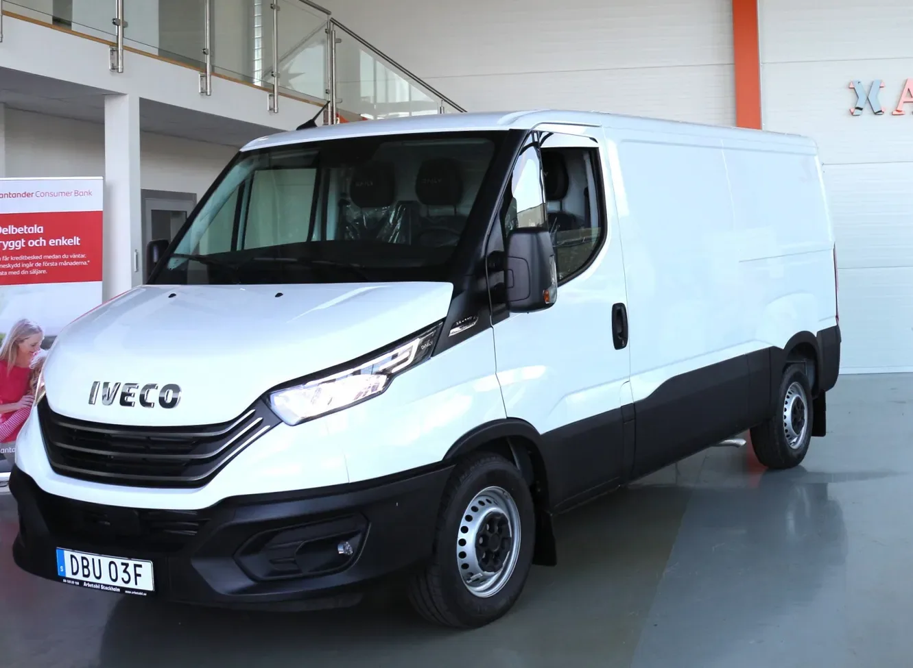
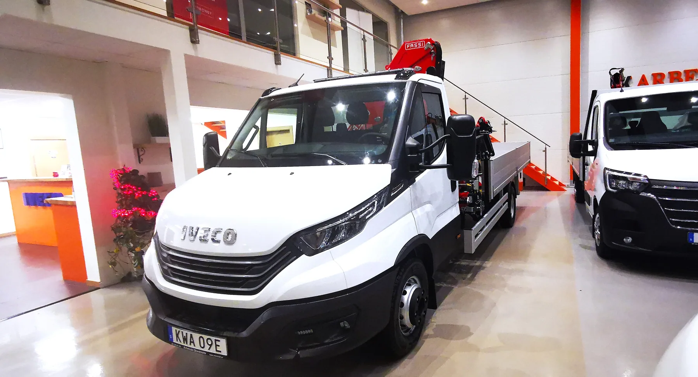
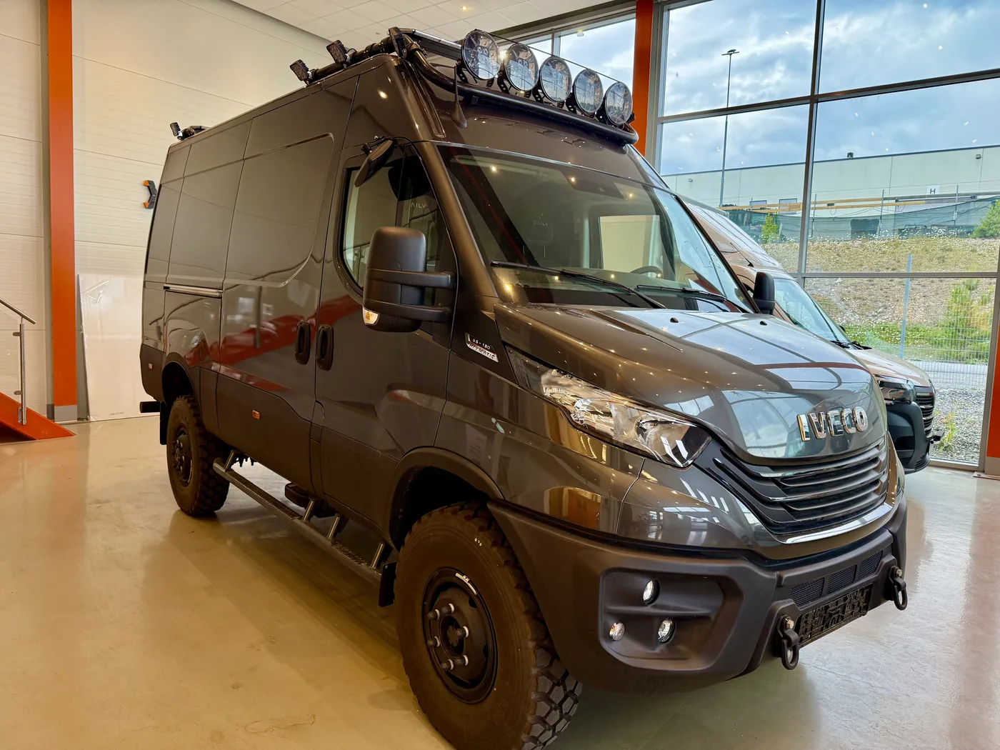
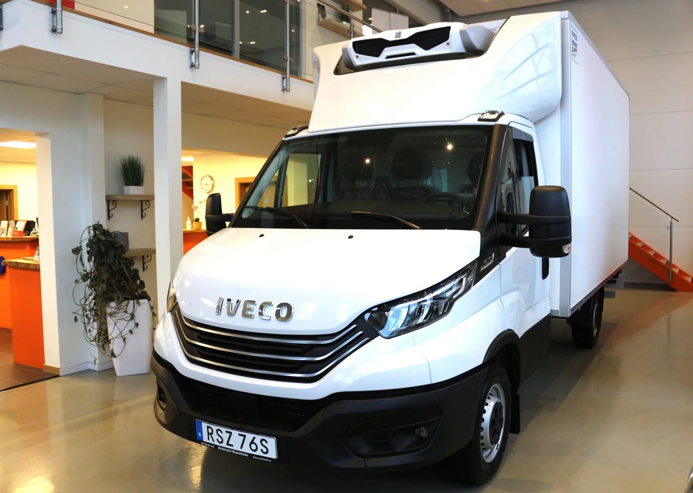
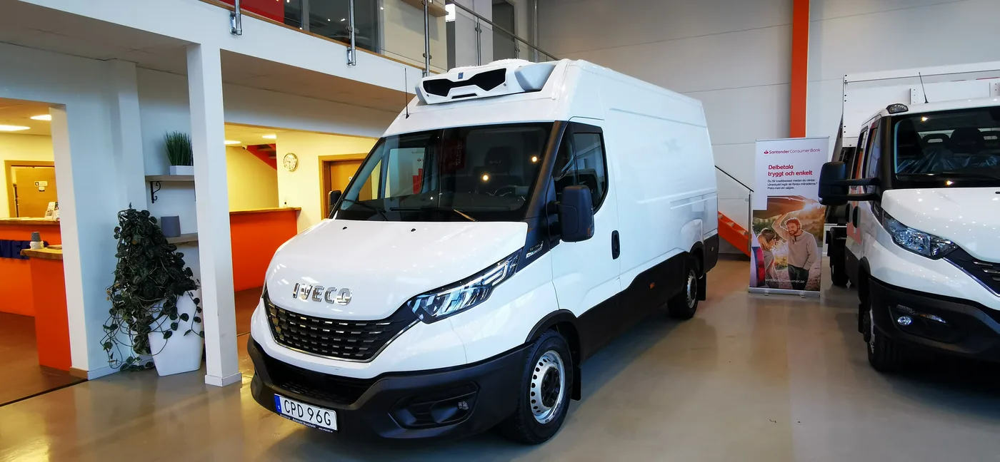
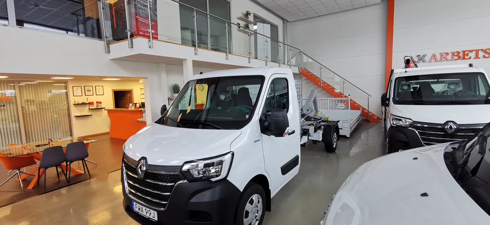
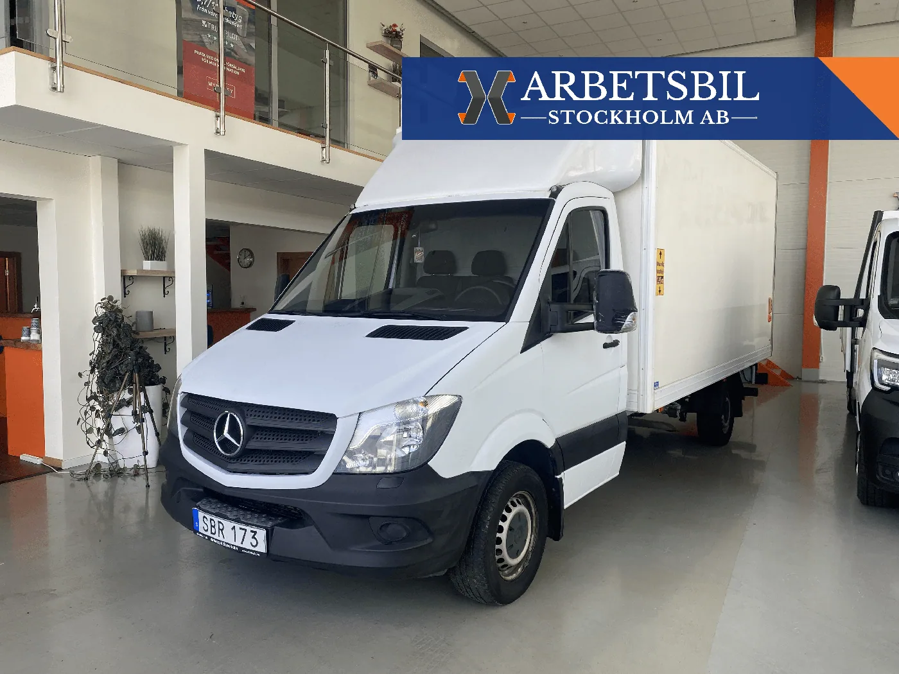
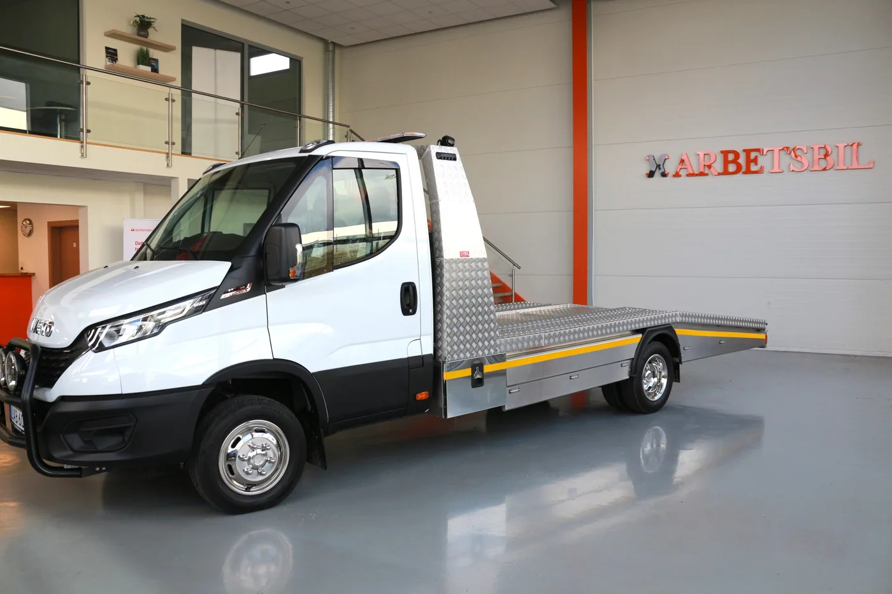
Bilar som lämnat verkstaden. Sålda bilar försvinner inte – de visar vad vi bygger och hur ofta.
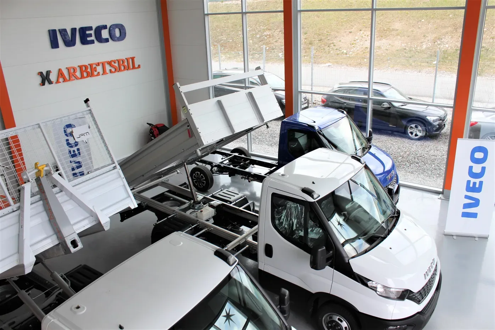
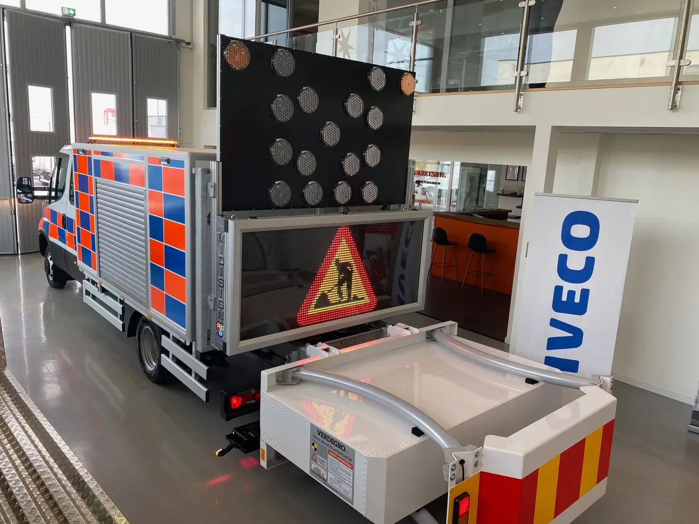
Till vänster en Iveco Daily chassi cab som den står i lagret. Till höger samma bilfamilj efter vår verkstad: kran, flak och stödben.
Från grundbil till färdig arbetsbil – byggd i vår verkstad.
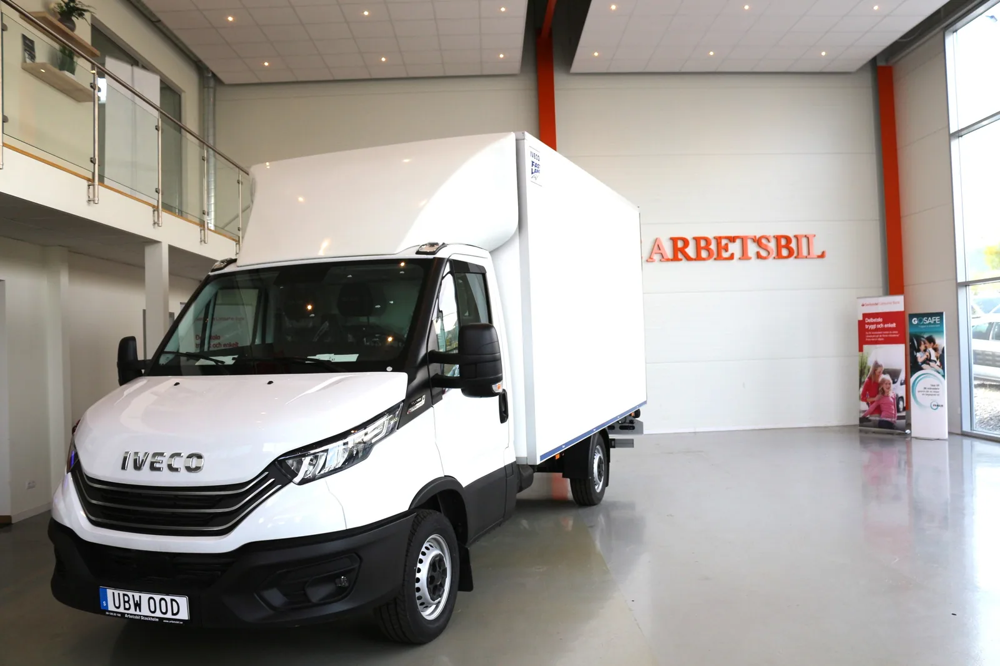
Dra för att jämföraFöre · chassi cab ur lagerEfter · kranbil ur verkstaden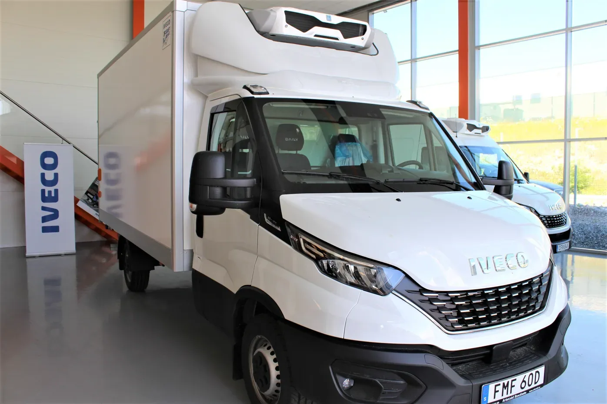
123 omdömen från företag och privatpersoner som köpt, byggt eller servat sin bil hos oss.
Läs alla omdömen på reco.se”Bra bemötande och fin service!”
”Björn på Arbetsbil tog hand om oss på ett mycket professionellt sätt som gjorde att vi kände oss trygga.”
”Grym servicenivå! Bra återkoppling och lika bra efter leverans.”
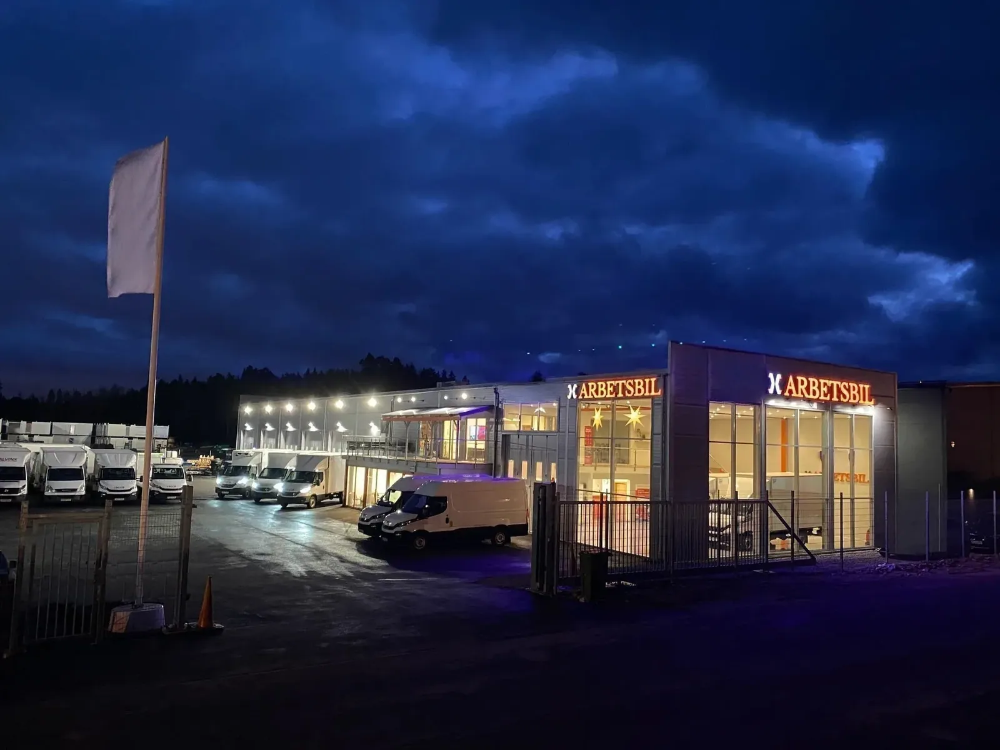
Auktoriserad verkstad för service, reparation och påbyggnad. Samma mekaniker som byggde bilen tar hand om den efteråt – och du får lånebil under tiden när det behövs.